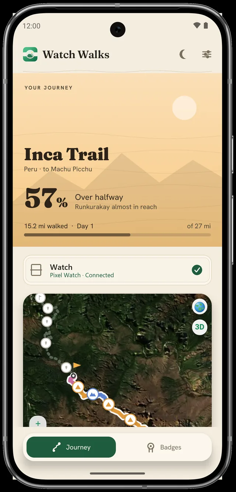
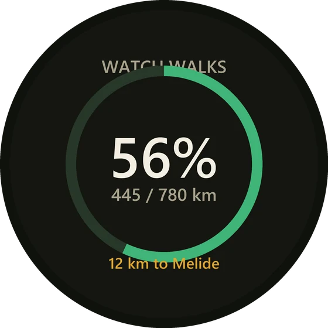
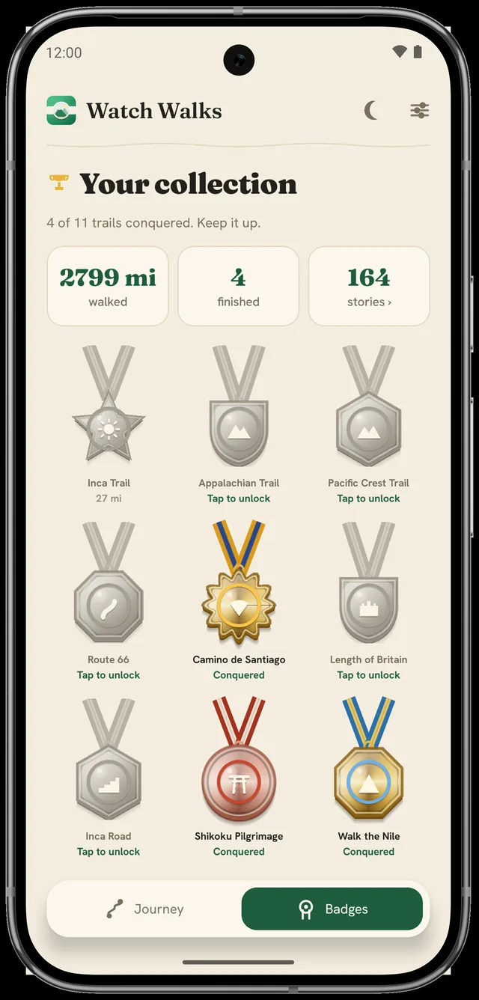
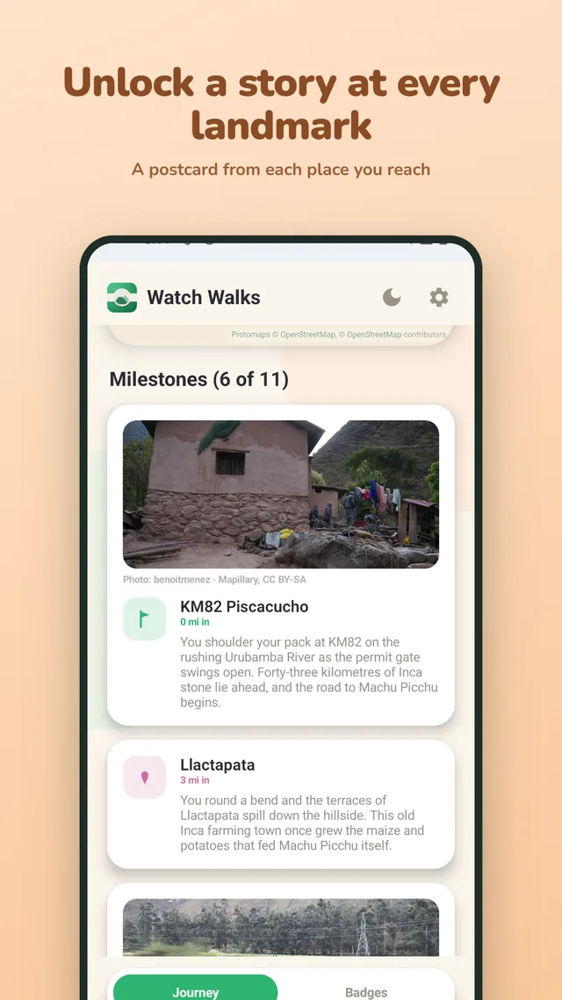

Steps you already take. Trails you always meant to walk.
Your everyday steps carry you down the world's greatest trails.
Watch Walks turns the steps you already take into a journey along real, famous trails, right on your wrist. Start free on the Inca Trail, glance down whenever you like to see how far you've come, and keep a postcard from every place you pass. No account, nothing to set up.
On Garmin, Wear OS and Apple Watch. Free to start on the Inca Trail.

Set it once. Then just live your life.
Walk your everyday life, and wake up somewhere legendary.
Get it on your watch
On Garmin, add each trail from the Connect IQ store. On Wear OS (Samsung, Pixel and more) and Apple Watch, install the app and add more trails in-app. The Inca Trail is free everywhere, and a free phone app — Android or iPhone — comes along for the ride.
Walk as normal
Your daily routine becomes your journey. Check in whenever you like to see how far you have come and what is waiting ahead.
Collect the landmarks
Pass each milestone and a short story of the place opens, all the way to the finish.
On the watch you already wear.
Watch Walks runs on Garmin, Wear OS and Apple Watch, so most popular brands are covered.
Garmin
Forerunner, Fenix, Venu, Vivoactive, Epix, Instinct and more, via the Connect IQ store.
Wear OS
Samsung Galaxy Watch, Google Pixel Watch, Mobvoi TicWatch, OnePlus Watch and other Wear OS watches, via Google Play.
Apple Watch
Apple Watch (watchOS 10 and later) with a native iPhone companion, via the App Store.
Your phone
A free companion app on Android and iPhone pairs with your watch and turns your steps into a living map.
Available now on Garmin (Connect IQ store), Wear OS (Google Play) and iPhone & Apple Watch (App Store) — all starting free with the Inca Trail. Get it on your watch in a few minutes.
Watch every step carry you through legendary places.
The same journey on Garmin, on Wear OS (Samsung Galaxy Watch, Google Pixel Watch and more) and on Apple Watch — a live progress glance and the story of every landmark you reach.

The same live progress glance and landmark stories on Garmin, Wear OS (Samsung, Pixel and more) and Apple Watch. Available now on every wrist — pick yours.
Private by default.
No ads, no analytics, no profiling. Walk with no account at all — or turn on optional Google backup if you want your trails synced across devices. You're always in control.
No account needed
Install and walk — we never ask who you are. Signing in is optional, only if you want cloud backup.
No tracking, ever
No analytics, no ads, no profiling, no selling your data. Just you and the trail.
Yours to keep
Your progress lives on your devices. Optional backup syncs only your trails and badges to your own Google account — nothing more.
From Peru to New Zealand, the world's greatest walks.
Dozens of legendary trails, from Peru to Antarctica, each a complete journey from start to finish with its own offline satellite map. Walk the whole Inca Trail free first; if you love it, unlock any other trail with a one-time purchase — yours to keep, no subscription. Reach the finish and the trail is still yours to walk again, or in reverse, climbing a rank on its badge each time.
Unlock a trail once and it's yours forever, on the same store account. Many more trails than shown here are waiting in the app.
See where you are. Read the story. Earn the badge.
A free phone app for Android and iPhone that turns your everyday steps into a living map. Follow your journey along the real route, read the story of every landmark you reach, and collect a unique badge for each trail you finish.

Every landmark you reach leaves you a postcard — a few words about the place you just walked past.
- A live journey map to follow your journey along the real route, seeing how far you have come and the landmarks still ahead
- Works offline on the trail, the map for each trail downloads once and then needs no signal, so it is always there when you are out walking
- A story to read at every landmark you reach, a glimpse of the place that you keep in your collection
- A unique badge for every trail, each with its own design and colours, yours the moment you reach the finish
- Sync with your watch, pulling your latest progress whenever you open your trail or tap Sync in the app
- Private by design, reading from your watch over Bluetooth and keeping everything on your phone
- Free companion app, with no account and no server
Take the app for a walk.
A quick look at the companion in motion: your journey and live map, the stories you collect along the way, and your wall of trail badges.

Want the real thing? Pick your watch and start walking — free on the Inca Trail, on Garmin, Wear OS and iPhone & Apple Watch.
The things people ask before they start.
Short, honest answers. If yours isn't here, email us and a real person will reply.
Is it a subscription?
No. The Inca Trail is free, and every other trail is a one-time purchase. Buy a trail once and it's yours to keep, no recurring charge.
Do I need to carry my phone or keep the app open?
No need to carry your phone on your walk. On Garmin the watch app runs on its own, just open it now and then so it sends your steps along. Wear OS runs on the watch too, and on Apple Watch the app reads your steps from Apple Health automatically.
Does it work offline on the trail?
Yes. Each trail's map downloads once, then needs no signal. Your steps keep counting and your journey keeps moving whether you're online or not.
Which watches work?
Garmin watches through the Connect IQ store (Forerunner, Fenix, Venu, Vivoactive, Epix, Instinct and more), Wear OS watches including Samsung Galaxy Watch and Google Pixel Watch, and Apple Watch (Series 4 and later on watchOS 10+).
How do the free and paid trails work?
The whole Inca Trail is free, so you can walk a full journey before spending anything. Any other trail is a one-time purchase, shown in your local currency, and yours to keep on the same store account.
Is my data private?
Yes. No account, no ads, no tracking. Your step data is read on your own device and stays there. Read the full privacy policy.
Pick your watch and start walking.
Watch Walks runs on Garmin, Wear OS and Apple Watch. Choose your watch below for the quick setup — you'll be walking the free Inca Trail in a few minutes, and can add any other trail in the app.
Garmin
Forerunner, Fenix, Venu, Vivoactive, Epix, Instinct and more. Install the free Inca Trail from the Connect IQ store.
Join on Garmin →Wear OS & Samsung
Samsung Galaxy Watch, Google Pixel Watch, TicWatch, OnePlus Watch and other Wear OS watches, via Google Play.
Join on Wear OS →iPhone & Apple Watch
iPhone with Apple Watch (watchOS 10+). Get it on the App Store.
Join on Apple →Start your first trail today.
Walk the world's greatest trails, one real step at a time. Free to start on the Inca Trail.
Pick your watch & start walking On a Garmin watch On iPhone & Apple Watch